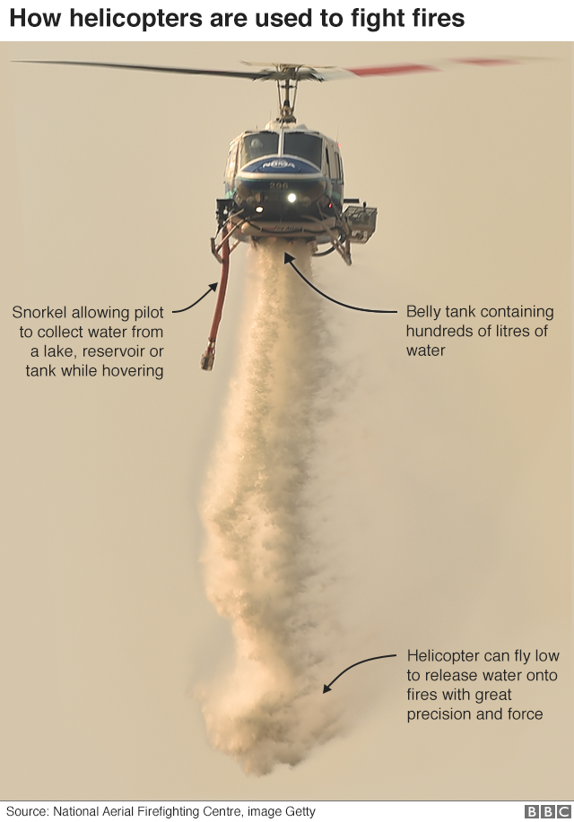

(CNN)The fires in Australia have been burning for months, consuming nearly 18 million acres of land, causing thousands to evacuate and killing potentially millions of animals.
They're showing minimal signs of slowing down. The Australian state of New South Wales, where both Sydney and Canberra are located, declared a state of emergency this week, as worsening weather conditions could lead to even greater fire danger.
But a 50,000-year-old solution could exist: Aboriginal burning practices.
Australia's deadly wildfires are showing no signs of stopping. Here's what you need to know
Here's how it works.
Aboriginal people had a deep knowledge of the land, said historian Bill Gammage, an emeritus professor at Australian National University who studies Australian and Aboriginal history. They can feel the grass and know if it would burn well; they knew what types of fires to burn for what types of land, how long to burn, and how frequently.
"Skills like that, they have but we don't know," Gammage said.
Aboriginal techniques are based in part on fire prevention: ridding the land of fuel, like debris, scrub, undergrowth and certain grasses. The fuel alights easily, which allows for more intense flames that are harder to fight.
The Aboriginal people would set small-scale fires that weren't too intense and clear the land of the extra debris. The smaller intensity fires would lessen the impact on the insects and animals occupying the land, too, as well as protect the trees and the canopy.